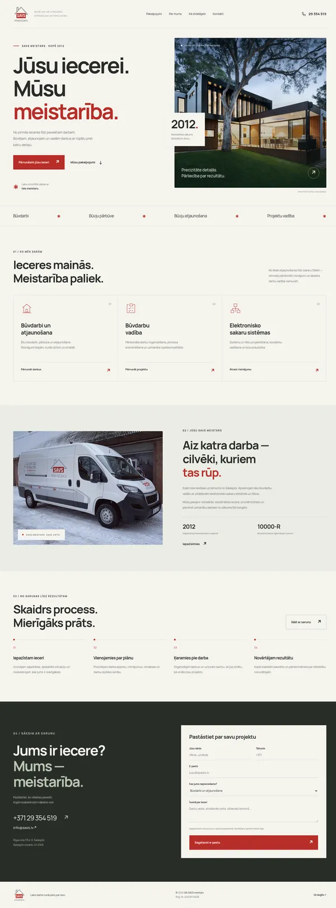
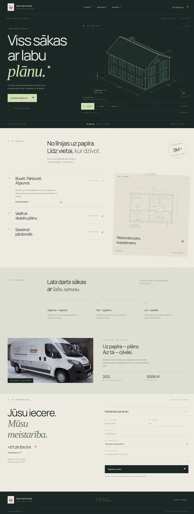
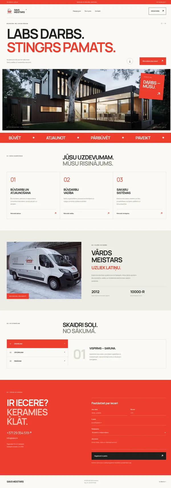
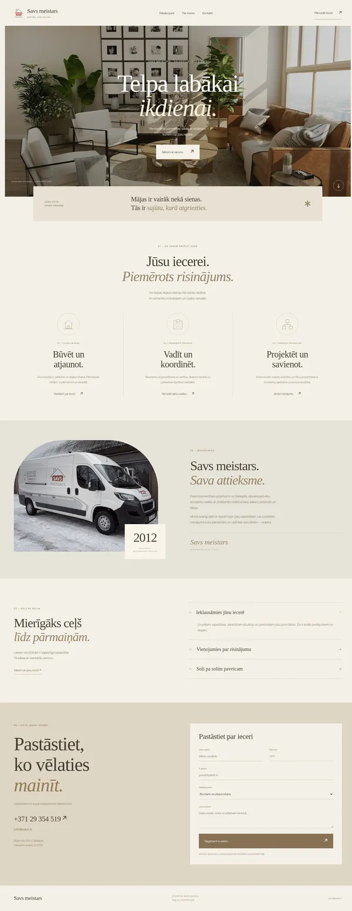
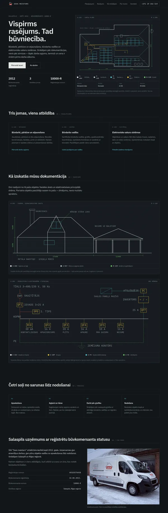
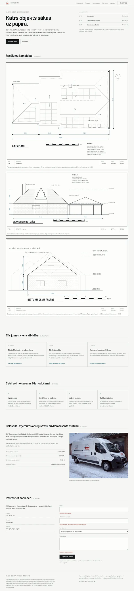
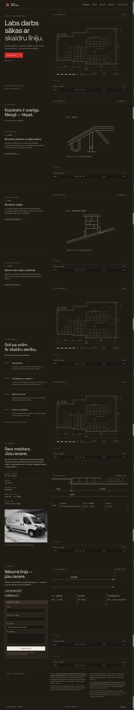

Savs meistars, Salaspils
Katrs variants ir pabeigta lapa ar jūsu īstajiem kontaktiem un pakalpojumiem, nevis skice. Zemāk redzama katra lapa vesela, no augšas līdz apakšai. Atveriet to, kas uzrunā, un pasakiet, kurā virzienā strādājam tālāk.
Tekstus, fotogrāfijas un krāsu toni var mainīt jebkurā no tiem, tāpēc izvēlieties pēc noskaņas un uzbūves, ne pēc atsevišķiem vārdiem.
Gaišs papīra fons, sarkans akcents un arhitektūras foto. Kārtīgs, klasisks uzņēmuma tēls.
Atvērt pirmo versiju
Tumša rasējumu studija. Mājas skati — aksonometrija, stāva plāns un fasāde — pārslēdzami turpat lapā.
Atvērt otro versiju
Plakāta pieeja: balts, spilgti sarkans, ļoti lieli burti un plata fotogrāfija. Skaļākais no septiņiem.
Atvērt trešo versiju
Interjera žurnāla noskaņa: silti smilšu toņi, serifa virsraksti un gaisīgs izkārtojums. Mierīgākais no septiņiem.
Atvērt ceturto versiju
Tumša rasējumu darbvirsma. Reālas mājas jumta plāns, fasāde un elektroshēma ar ieslēdzamiem slāņiem. Tehniskākais no septiņiem.
Atvērt piekto versiju
Izdrukāta rasējumu mape: lapas rāmis, rakstlaukums un lapu saraksts kā satura rādītājs. Jumta plāns, fasāde un sānu skats. Klusākais no septiņiem.
Atvērt sesto versiju
Tumša darbvirsma, kurā māja tiek uzrasēta jūsu acu priekšā. Silts grafīts, balta līnija un sarkans tikai tapšanas brīdī. Ritinot — tuvāk detaļām.
Atvērt septīto versiju